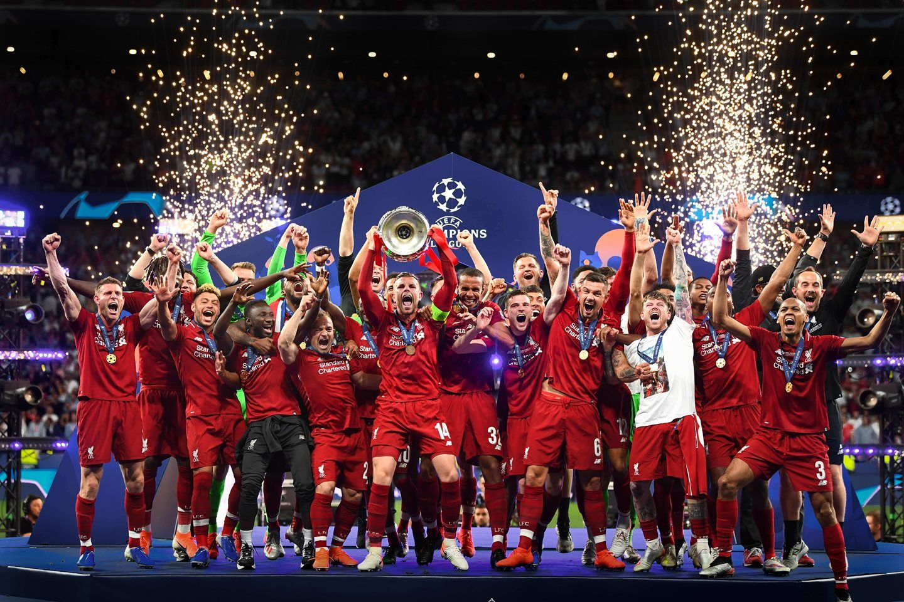
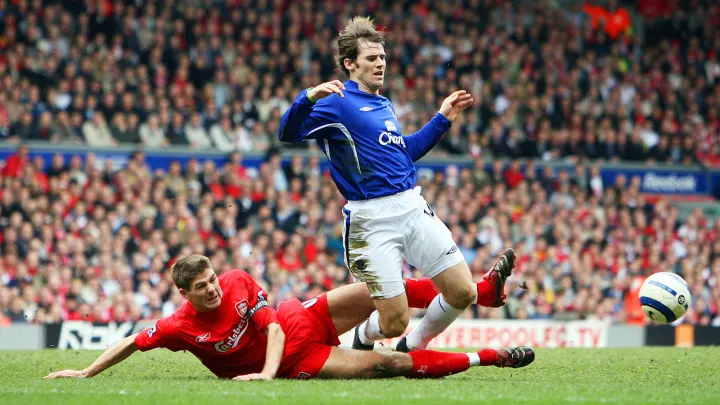
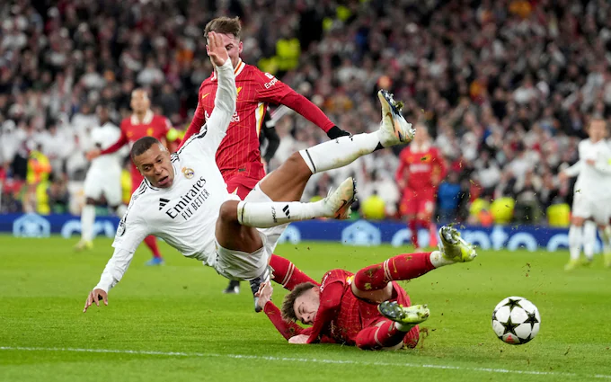
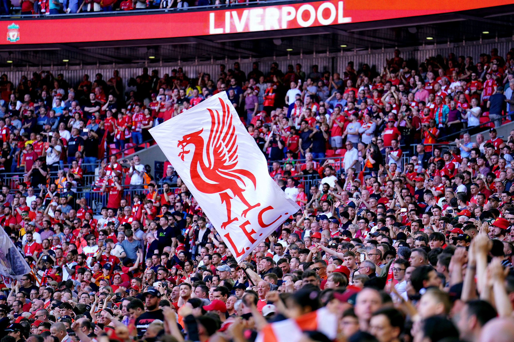
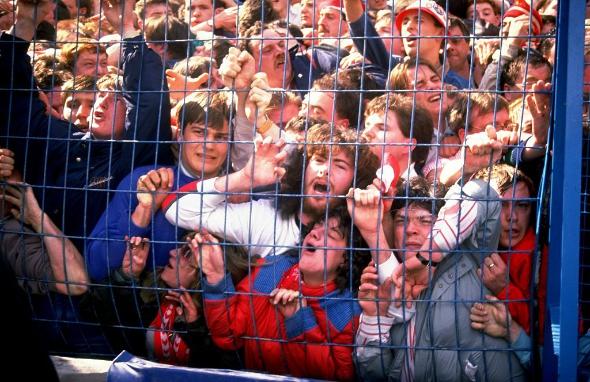

Liverpool Football Club is a professional football club based in Liverpool, England. The club competes in the Premier League, the top tier of English football. Founded in 1892, the club joined the Football League the following year and has played its home games at Anfield since its formation. Liverpool is one of the most valuable and widely supported clubs in the world.
Honours
Liverpool's first trophy was the Lancashire League, which it won in the club's first season. In 1901, the club won its first League title, while the nineteenth and most recent was in 2020. Its first success in the FA Cup was in 1965. In terms of the number of trophies won, Liverpool's most successful decade was the 1980s, when the club won six League titles, two FA Cups, four League Cups, one Football League Super Cup, five Charity Shields (one shared) and two European Cups.
In 2020, Liverpool became the first English club to have won a League title in eight different decades.
The club has accumulated more top-flight wins and points than any other English team. Liverpool also has the highest average league finishing position (3.3) for the 50-year period to 2015 and second-highest average league finishing position for the period 1900–1999 after Arsenal, with an average league placing of 8.7.
Liverpool is the most successful British club in international football with fourteen trophies, having won the European Cup/UEFA Champions League (UEFA's premier club competition) six times, an English record that is only surpassed by Real Madrid and A.C. Milan. Liverpool's fifth European Cup win, in 2005, meant that the club was awarded the trophy permanently and was also awarded a multiple-winner badge.
Liverpool also hold the English record of three wins in the UEFA Cup, UEFA's secondary club competition. Liverpool also hold the English record of four wins in the UEFA Super Cup. In 2019, the club won the FIFA Club World Cup for the first time, and also became the first English club to win the international treble of Club World Cup, Champions League and UEFA Super Cup.

Stadium
Liverpool's home stadium is Anfield, which was built in 1884 on land adjacent to Stanley Park. Situated 2 miles (3 km) from Liverpool city centre, it was originally used by Everton before the latter moved to Goodison Park after a dispute over rent with Anfield owner John Houlding. Left with an empty ground, Houlding founded Liverpool in 1892 and the club has played at Anfield ever since. The capacity of the stadium at the time was 20,000, although only 100 spectators attended Liverpool's first match at Anfield.
The Kop is the stadium section where Liverpool's most vocal supporters, often referred to as "Kopites," have traditionally gathered. Historically, the Kop was a terraced stand before it was converted to seating, and it has long been recognized as the heart of Anfield's fan base. It was originally built in 1906 due to the high turnout for matches and was called the Oakfield Road Embankment.
The expansion, which is estimated to cost £60m, was described as "a huge milestone" by managing director Andy Hughes, and would also see rail seating being trialled in the Kop for the 2021–22 Premier League season. The first league game to feature an attendance of over 60,000 at Anfield, following the near completion of the Anfield Road stand redevelopment, was a Premier League match against Brighton on 31 March 2024.
Rivalries

Liverpool's longest-established rivalry is with fellow Liverpool team Everton, against whom they contest the Merseyside derby. The rivalry stems from Liverpool's formation and the dispute with Everton officials and the then owners of Anfield. The Merseyside derby is one of the few local derbies which do not enforce fan segregation, and hence has been known as the "friendly derby".
Since the mid-1980s, the rivalry has intensified both on and off the field and, since the inception of the Premier League in 1992, the Merseyside derby has had more players sent off than any other Premier League game. It has been referred to as "the most ill-disciplined and explosive fixture in the Premier League". In terms of support within the city, the number of Liverpool fans outweighs Everton supporters by a ratio of 2:1.

Liverpool's rivalry with Manchester United stems from the cities' competition in the Industrial Revolution of the 19th century. Connected by the world's first inter-city railway, by road Liverpool and Manchester are separated by approximately 30 miles (48 km) along the East Lancs Road. Ranked the two biggest clubs in England by France Football magazine, Liverpool and Manchester United are the most successful English teams in both domestic and international competitions, and both clubs have a global fanbase. Viewed as one of the biggest rivalries in world football, it is considered the most famous fixture in English football.
The two clubs alternated as champions between 1964 and 1967, and Manchester United became the first English team to win the European Cup in 1968, followed by Liverpool's four European Cup victories. Despite the 39 league titles and nine European Cups between them, the two rivals have rarely been successful at the same time – Liverpool's run of titles in the 1970s and 1980s coincided with Manchester United's 26-year title drought while United's success in the Premier League-era coincided with Liverpool's 30-year title drought, with the two clubs having finished first and second in the league only five times. Such is the rivalry between the clubs that they rarely do transfer business with each other.
The last player to be transferred between the two clubs was Phil Chisnall, who moved to Liverpool from Manchester United in 1964.
Support

Liverpool is one of the best supported clubs in the world. The club states that its worldwide fan base includes 300 officially recognised Supporters Clubs in 100 countries. Notable groups include Spirit of Shankly. The club takes advantage of this support through its worldwide summer tours, which has included playing in front of 101,000 in Michigan, U.S., and 95,000 in Melbourne, Australia.
Liverpool is one of the best supported clubs in the world. The club states that its worldwide fan base includes 300 officially recognised Supporters Clubs in 100 countries. Notable groups include Spirit of Shankly. The club takes advantage of this support through its worldwide summer tours, which has included playing in front of 101,000 in Michigan, U.S., and 95,000 in Melbourne, Australia.
The club also has a significant following on social media, and in 2024, it became the first Premier League club (and the third sports team in the world, after Barcelona and Real Madrid) to amass 10 million subscribers on YouTube. Liverpool fans often refer to themselves as Kopites, a reference to the fans who once stood, and now sit, on the Kop at Anfield. In 2008, a group of fans decided to form a splinter club, A.F.C. Liverpool, to play matches for fans who had been priced out of watching Premier League football.
The song "You'll Never Walk Alone", originally from the Rodgers and Hammerstein musical Carousel and later recorded by Liverpool musicians Gerry and the Pacemakers, is the club's anthem and has been sung by the Anfield crowd since the early 1960s. Simon Hart of The Independent wrote: "The pre-match, scarfs-raised, sing-it-loud ritual is as much a part of Liverpool's fabric as their red shirts." The song's title adorns the top of the Shankly Gates, which were unveiled on 2 August 1982 in memory of former manager Bill Shankly. The "You'll Never Walk Alone" portion of the Shankly Gates is also reproduced on the club's badge.
Rememberance

The club's supporters have been involved in two stadium disasters. The first was the 1985 Heysel Stadium disaster, in which 39 people, mostly Italians and Juventus supporters, were killed. They were confined to a corner by Liverpool fans who had charged in their direction; the weight of the cornered fans caused a wall to collapse. UEFA laid the blame for the incident solely on the Liverpool supporters, and banned all English clubs from European competition for five years. Liverpool was banned for an additional year, preventing it from participating in the 1990–91 European Cup, even though it won the League in 1990. Twenty-seven fans were arrested on suspicion of manslaughter and were extradited to Belgium in 1987 to face trial.
In 1989, after a five-month trial in Belgium, 14 Liverpool fans were given three-year sentences for involuntary manslaughter; half of the terms were suspended.
The second disaster took place during an FA Cup semi-final between Liverpool and Nottingham Forest at Hillsborough Stadium, Sheffield, on 15 April 1989. Ninety-seven Liverpool fans died as a consequence of overcrowding at the Leppings Lane end, in what became known as the Hillsborough disaster. In the following days, The Sun's coverage of the event spread falsehoods, particularly an article entitled "The Truth" that claimed that Liverpool fans had robbed the dead and had urinated on and attacked the police. Subsequent investigations proved the allegations false, leading to a boycott of the newspaper by Liverpool fans across the city and elsewhere; many still refuse to buy The Sun 30 years later.
Many support organisations were set up in the wake of the disaster, such as the Hillsborough Justice Campaign, which represents bereaved families, survivors and supporters in their efforts to secure justice.